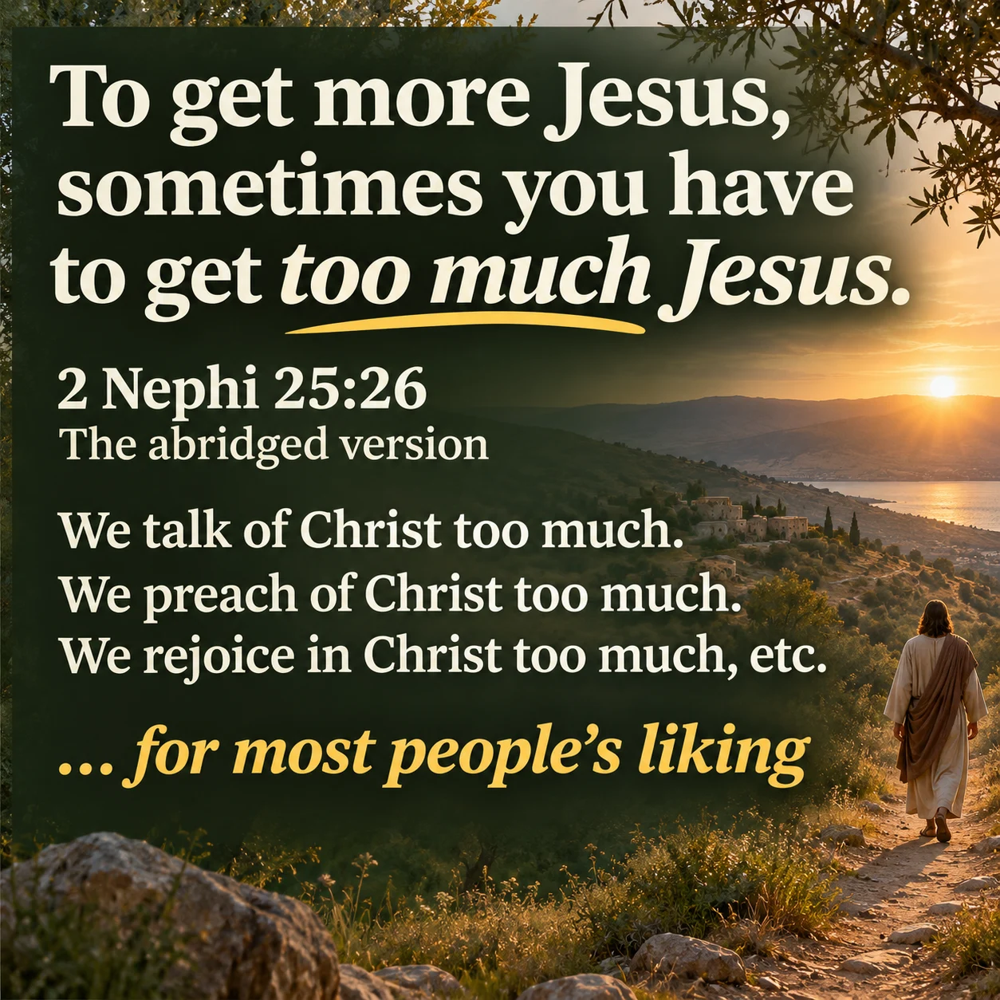

Greg, Jesus wants you to talk about this.
When I say “saturate this with Jesus,” I mean write it as if Jesus is really here, right in the middle of ordinary life. He’s in the kitchen with me, at Walmart, beside me when I wake up. What is He saying? What is He showing me? How is He working through the people around me, and what might the angels be doing behind the scenes? Let me see what changes when I take seriously that Jesus is my best friend. In the first draft, go as far as sacred imagination will take us. We can pull back later.
Video reminder. Record a short video about one of the big changes this past month. Jesus has been emphasizing how important it is to saturate all my stuff with Him. As a drafting technique, push it right up to the line of “too much Jesus,” maybe even past it, then back it off in revision.
